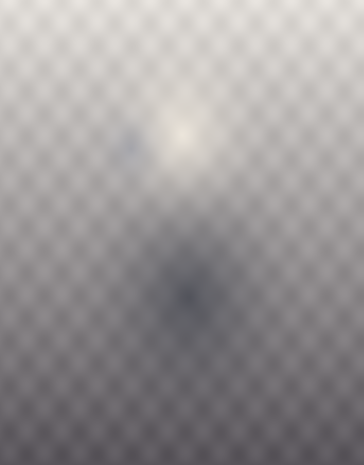

최근 노트
북쪽 정원에서의 재회
2막 후반, 유진이 오래된 편지를 발견하고 리아의 이름을 처음으로 부르는 장면.
시나리오비공개초안
오늘의 창작실
캐릭터, 세계관, 시나리오, 이미지 레퍼런스를 문서와 보드 사이에서 자유롭게 엮는 창작 아카이브입니다.
2막 후반, 유진이 오래된 편지를 발견하고 리아의 이름을 처음으로 부르는 장면.

침묵을 기록하는 사서. 잃어버린 왕국의 마지막 목격자.
CHARACTER DATABASE
나이 24 · 기록 사서 · #침착함 #비밀 #달빛
왕립 도서관이 불탄 밤 이후, 엘리아는 말보다 기록으로 감정을 남기는 사람이 되었다.
13세 입궁, 19세 추방, 24세 루멘 항구 귀환.
상징 색: 흐린 은색 · 반복 이미지: 잠긴 서랍과 파란 잉크.
LORE WIKI
세계관 / 지역 / 항구
달이 바다에 낮게 걸리는 밤이면, 항구의 등대는 빛 대신 오래된 이름들을 비춘다.
“이 도시에서는 아무도 완전히 사라지지 않는다. 기록되지 않을 뿐이다.”
VISUAL PAGE BUILDER
배경, 이미지, 문단, 링크 블록을 자유롭게 배치하는 시각 편집 모드입니다.
IMAGE ARCHIVE
SANDBOXED EMBED
PRIVATE NOTES
기록을 태우는 결말, 기록을 공유하는 결말, 아무도 읽지 않는 결말.
자주 반복되는 정서와 장면 이미지를 모아둔 메모.
PREFERENCES